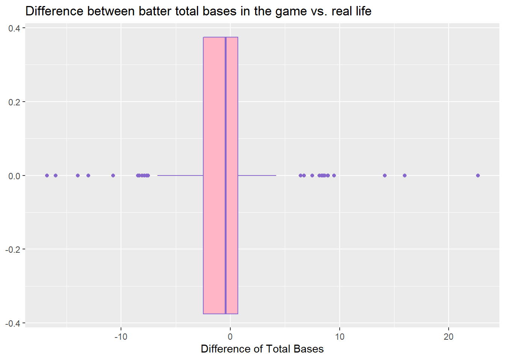
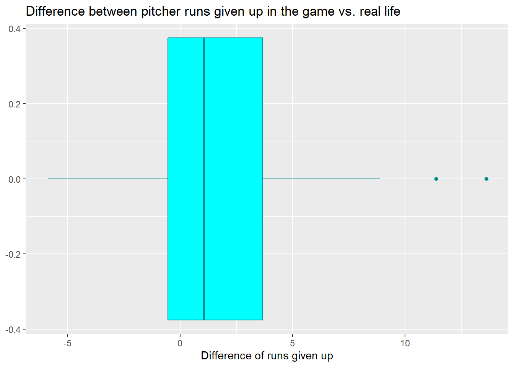
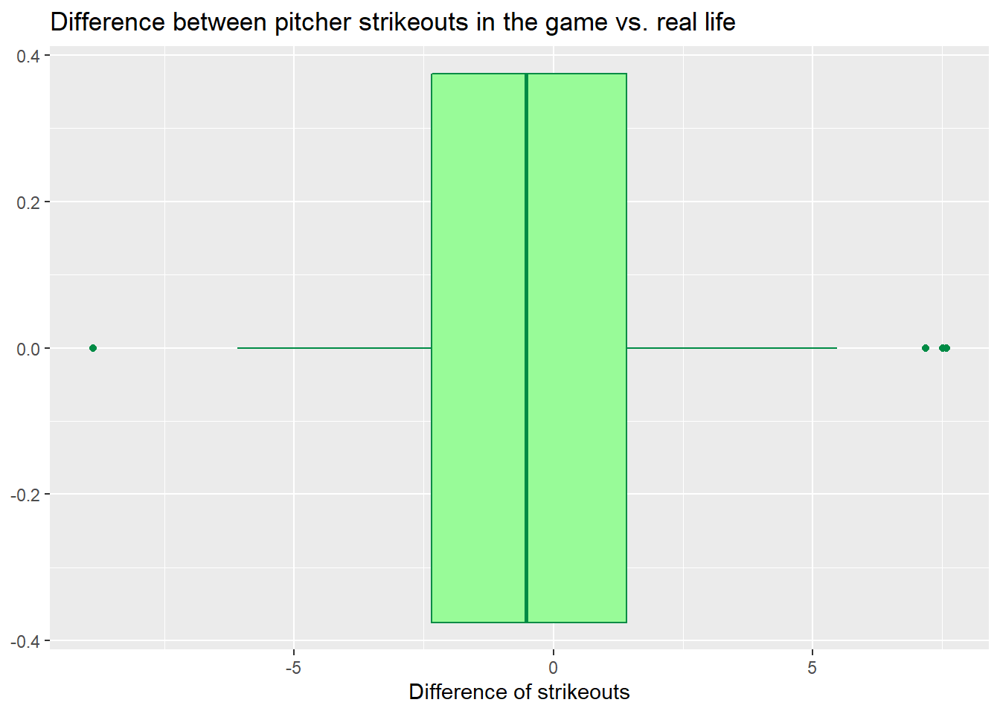
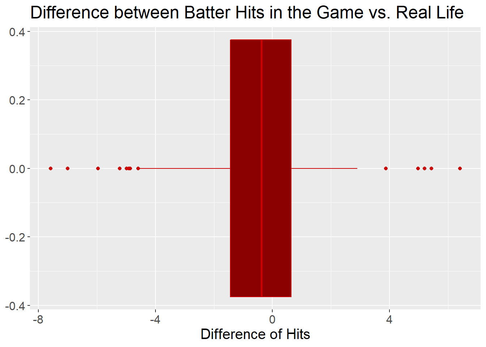

Chapter 5 Results
We proceed to explore the data by producing various plots.

There are definitely some outliers, but for at least 50% of the players that were used in the board game, APBA does a great job at portraying them realistically. We know this because of the location and width of the box in the above box and whisker plot. The box represents 50% of the data and is nearly centered at 0, where 0 indicates no deviation from the number of hits a player should have (in other words, players with H_deviation = 0 had exactly the right number of hits in the APBA game). Furthermore, the box is very skinny, only a few hits wide. 50% of players in the game had between 2 hits too few and one hit too many in the game.
Looking at the players representing the outliers, even some of these can be explained away. For example, for hitters that had more hits than expected, two of the top six (Andres Galarraga and Jorge Posada) hit inordinately well against left handed pitchers. For hitters that had fewer hits than expected, five of the worst eight (Rico Brogna, Bobby Abreu, Chipper Jones, Fernando Vina, and Edgar Renteria) hit inordinately badly against left handed pitchers. Further investigation is necessary, but it may be that left handed pitchers appeared more frequently than expected in the data set. This is possible since the data set had less than 300 players in it and there were more than 800 players that played in 1998 in real life.

Once again, APBA did a great job at portraying hitters realistically; 50% of players are within a few total bases of their expected performance. Also, once again, the box plot is fairly well centered around 0 meaning about half the players did better than expected and half did worse than expected.
Outliers are a bit more extreme here, but this should not be surprising. For example, if a player had one more homerun than expected, that is equivalent to 4 more total bases than expected. In other words, even slight deviations in extra base hits lead to a more noticeable TB deviation.
Once again, further investigation is necessary, but it may be that outliers with many more total bases than expected represent players that played a disproprortionate number of games in ballparks that allow homeruns easily than they played in in real life. APBA takes the ballpark effects into account! For example, some ballparks have fences which are much closer to the batter than others making it easier to hit a home run in those ballparks. Also, Coors Field in Colorado (in which many of the APBA games were played) allows more homeruns than other ballpaks for another reason – the air is much thinner

APBA seems to have done a good job with pitchers as well; 50% of pitchers in the game gave up within 5 earned runs of expected and, once again, the box is fairly well centered on 0 which means about half the pitchers did better than expected and half did worse than expected.
Mark Portugal of the Phillies represents the biggest outlier. He gave up more than 13 runs more than expected in his outings. He was very unlucky for his manager in the APBA game!
50% of pitchers in the game gave up within 5 hits of what was expected and, once again, the box is fairly well centered on 0.
The most extreme outlier on the plot represents Brian Bohanon. Looking at the plot you can see he allowed 18 hits less than expected! This seemed too extreme to believe, so we went back and looked at the scoresheets. Sure enough, there was a tabulation error – the value is incorrect.

50% of pitchers in the game had within a couple strikeouts of what was expected and, once again, the box is fairly well centered on 0. APBA continues to impress.

The parallel coordinate plot above shows the deviations for each of the various hitting statistics. As a reminder, the deviation represents the player’s performance in the game – the player’s expected performance in the game.
You’ll note a fairly dark curve here indicating a great many players have about the same deviation for each statistic. This illustrates APBA’s consistency.
Looking at the similar parallel coordinate plot above for the deviations for each of the various pitching statistics, we again see a fairly dark curve illustrating consistency. Debatably one exception is in the number of walks that pitchers gave up – the pitchers seem to vary most widely from reality in this statistic compared to the others, and vary in a way which was less consistent compared to the other pitching statistics. It appears that SV_deviation is the most consistent of all the pitching statistics, but this is misleading. SV represents “Saves” which is a pitching statistic that only some relief pitchers accumulate. Most relief pitchers and ALL starting pitchers will have 0 saves in real life.
For each dominant hand there seems to exist similar gaps between hits but overall we can see that right-handed batters seem to gave the largest number of hits. However they also have a high number of batters having a small number of hits. We should note that in this data the number of right-handed batters is much bigger than the left and both-handed batters.

In the real pitchers data we have the same issue as before, where we have more data on right-handed players than for left-handed players. Here we can see that the highest number of hits by a pitcher was obtained by a right-handed player (Scott Erickson).
Here, it appears that a batter who is left-handed plays more games than any other batter on average. We can see that a batter who can bat with both hands has much better chances in being able to play a game, as all players who can bat with both hands have played a game. We should also note that the first quantile for the players who play with both hands is very high up compared to the left and right-handed players. Again this might be due to the difference of sample sizes.
We can see that with pitchers, there is a huge difference in the number of wins depending on the player’s dominant hand. On average, it appears that a pitcher who is right-handed wins more games. Where the third quantile of the left-handed players is very close to the right-handed player’s median.